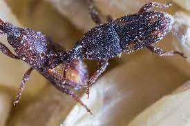
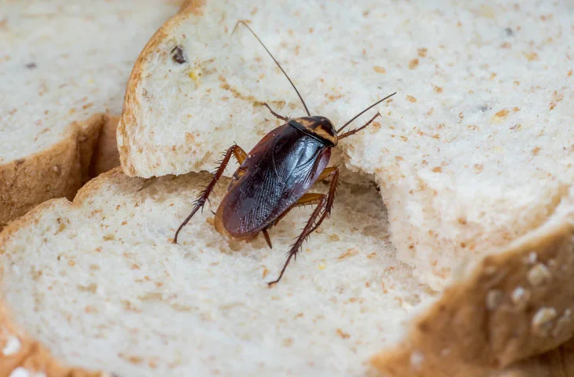

Traitement d'insectes alimentaires Casablanca
Traitement d'insectes alimentaires Casablanca
Société de traitement d'insectes alimentaires Casablanca, les insectes alimentaires, également connus sous l'appellation d'Insectes des Produits Stockés (IPS), comprennent un grand nombre d'espèces comme le charançon de la farine ou la mite alimentaire. Ils peuvent contaminer différents produits stockés notamment des denrées alimentaires comme les grains, les céréales, les fruits secs, les noix, les graines, et même le tabac.
Les insectes alimentaires constituent un risque sanitaire. Ils peuvent infester les placards des habitations, les usines agro-alimentaires, les entrepôts, les boulangeries, les commerces alimentaires, les restaurants, les moulins et les fermes. En contaminant les produits, ils les rendent impropres à la consommation et peuvent générer des pertes économiques conséquentes pour les entreprises. Une infestation non traitée peut conduire à la destruction de votre marchandise. Un expert est en mesure d'identifier précisément le type d'insecte à l'origine de votre problème et de vous en débarrasser durablement. Demande un devis gratuit ou contactez WINBEST DERATISATION pour connaître nos solutions contre les insectes alimentaires ou contactez-nous en ligne grâce à notre formulaire de contact.

Les signes de la présence d'insectes alimentaires
Vous avez découvert des insectes dans les aliments stockés dans vos placards ? Vous devez alors vérifier les paquets de sucre, de farine, de chocolat en poudre et les jeter s'ils sont contaminés. En cas d'une infestation dans une entreprise le problème est tout autre ! Les pertes financières liées aux marchandises endommagées peuvent être beaucoup plus élevées et la réputation ternie. Il faut impérativement être en mesure d'identifier les premiers signes d'un problème d'insectes alimentaires pour pouvoir y remédier rapidement et efficacement.
Traitement d'insectes alimentaires Casablanca
Comment identifier la présence d'insectes alimentaires
Les indices courants de la présence d'Insectes des produits stockés (IPS) sont: des produits stockés abîmés, des insectes vivants ou morts (petits coléoptères et mites alimentaires), des larves, des pupes (chrysalides) ou toiles d'insectes sur les bacs de stockage entreposés ; des infestations, des trous, des larves ou des toiles d'insectes à l'extérieur des paquets ou des sacs; des larves, pupes ou toiles d'insectes dans les denrées renversées; des larves, pupes ou toiles d'insectes sur les poutres et rebords de fenêtre; la présence de ces parasites dans les pièges à insectes ou postes d'appâtage pour rongeurs.
Où trouver les insectes
Si vous soupçonnez un problème, vous devez rechercher où ces parasites se cachent. Les insectes des produits stockés peuvent vivre dans des denrées sèches telles que: le grain stocké la farine le sucre les fruits secs les produits à base de céréales transformées et blanchies les bonbons le fromage la viande et tout autre aliment séché le gingembre sec le poisson séché.
Avez-vous repéré l'un de ces signes ?
Si vous pensez avoir un problème d'insectes alimentaires, nos services professionnels peuvent vous aider à vous débarrasser de ces parasites. Nous disposons d'une expérience inégalée dans la protection des entreprises agro-alimentaires. Nous nous appuyons sur une approche en trois étapes qui apporte une protection rigoureuse et fiable: Réduction du risque que des insectes pénètrent dans vos locaux Inspections de surveillance et suivi régulier Utilisation de pesticides approuvés par la législation afin de prévenir et d'éliminer les parasites Appelez-nous dès aujourd'hui au (+212) 615-599-092 pour en savoir plus sur nos solutions professionnelles contre les insectes des produits stockés.
Questions fréquemment posées sur les insectes alimentaires
Quels sont les signes de la présence d'insectes des produits stockés ?
Les signes de présence d'insectes alimentaires sont : les insectes adultes (petites mites alimentaires ou coléoptères), les larves, les pupes (chrysalides) ou de cocons de soie sur les bacs de stockage et sur les étagères. Vous pourrez aussi voir des trous à l'extérieur des sacs de stockage. Il est relativement facile de contenir une infestation dans votre maison en vous débarrassant de la nourriture infectée. Vous devez aussi protéger hermétiquement toutes les autres sources de nourriture. de la nourriture infectée. Vous devez aussi protéger hermétiquement toutes les autres sources de nourriture.
Retirez et nettoyez les miettes et autres restes de nourriture accumulés à l'intérieur et sous les placards et les étagères. N'oubliez pas non plus de nettoyer les restes d'aliments comme les miettes sur le sol et les éventuelles fissures et recoins.

Retirez et nettoyez les miettes et autres restes de nourriture accumulés à l'intérieur et sous les placards et les étagères. N'oubliez pas non plus de nettoyer les restes d'aliments comme les miettes sur le sol et les éventuelles fissures et recoins.
Comment lutter contre les insectes alimentaires dans mon entreprise ?
WINBEST DERATISATION vous propose des solutions sur-mesure pour protéger vos stocks avec un programme de surveillance et de lutte en trois phases : Réduction du risque d'intrusion de la part des insectes des produits stockés dans vos locaux par la mise en œuvre de méthodes de prévention. Inspections et suivi régulier des locaux et des stocks entrants par l'utilisation de dispositifs de surveillance comme les pièges et les appâts de phéromones. Utilisation de pesticides homologués, de fumigants ou un traitement à haute température pour prévenir, gérer et éliminer les parasites.
Quelles sont les espèces d'insectes alimentaires présents au Maroc ?
Traitement d'insectes alimentaires Casablanca, Les insectes dans les denrées alimentaires, également connus sous le nom d'Insectes des produits stockés (IPS), comprennent de très nombreuses espèces d'insectes. En voici quelques exemples : Teigne des fruits secs Plodia interpunctella Pyrale des amandes Cadra cautella Pyrale du tabac Ephestia elutella Pyrale de la farine Ephestia kuehniella Tribolium rouge de la farine Tribolium castaneum Dermeste des grains Trogoderma granarium Tribolium brun de la farine Tribolium confusum Cucujide des grains Ahasverus advena
Les espèces d'insectes alimentaires
Solutions de lutte contre les insectes alimentaires à Casablanca Maroc
En dépit de leur petite taille, ces insectes représentent une grande menace pour les entreprises et les machines. Voici un aperçu des dégâts potentiels : Contamination des denrées alimentaires et des biens, aboutissant à une destruction des stocks et un manque à gagner pouvant atteindre des sommes considérables. Détérioration des machines en raison de l'accumulation de produits alimentaires (dépôts) dans les machines causée par les insectes des produits stockés. Réchauffement du grain – les activités des insectes dans le grain infesté peuvent générer de la chaleur et de l'humidité, ce qui peut créer des moisissures et faire germer les grains. Non-respect de la législation, ce qui peut ternir votre réputation et affecter vos revenus.
WINBEST DERATISATION dispose d'une équipe d'experts entièrement dédiée à nos clients de l'agroalimentaire. Notre équipe est composée d'excellents techniciens, de biologistes de terrain, de responsables "qualité" et de responsables techniques. Nos connaissances approfondies sur les niveaux de protection constants exigés par nos clients signifient que nos compétences, notre savoir-faire et nos solutions sont inégalés au Maroc et dans le monde entier. Nous pouvons résoudre rapidement et avec un minimum de contraintes les problèmes liés aux insectes alimentaires. Nous disposons de traitements adaptés et innovants comme le traitement thermique sans pesticide. Nous pouvons aussi être amenés à utiliser des solutions de fumigation. Vous pensez avoir un problème d'insectes dans vos stocks ? Reportez-vous à la partie concernant les signes de la présence d'insectes alimentaires.